取指—译码—执行—写回四级管道；ICoreService 为冻结级接口，CoreFactory 是唯一的内核创建点。
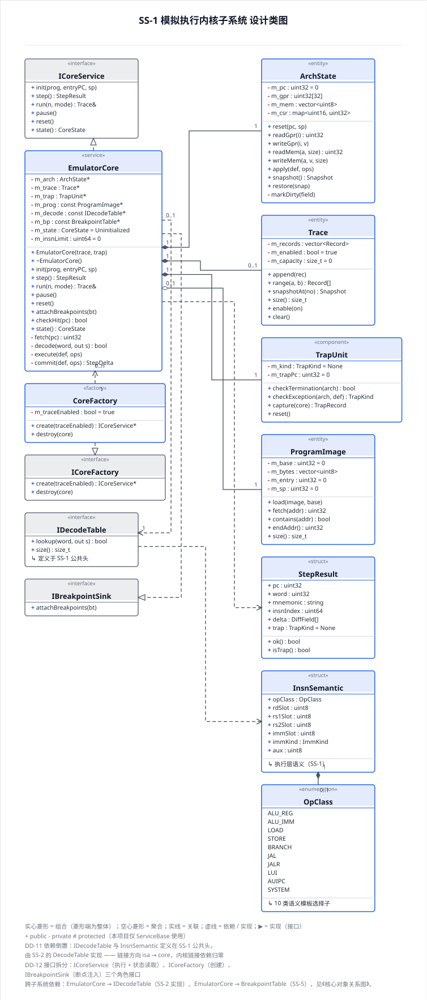
DecodeTable 是「指令语义不硬编码」的物理落点；IsaRegistry 兼作 UC-02 的流程协调者。
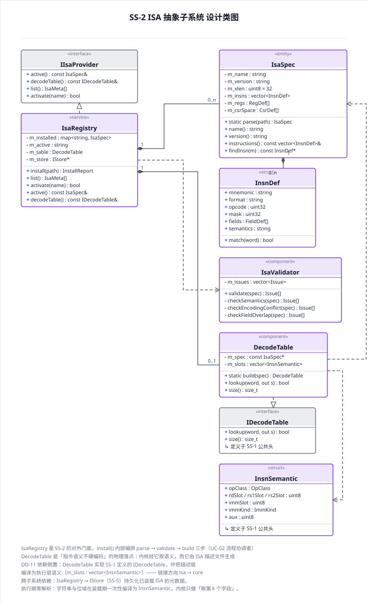
CompareEngine 同时被 TestService 与 DiffService 调用——FR-6.5 的唯一落点。
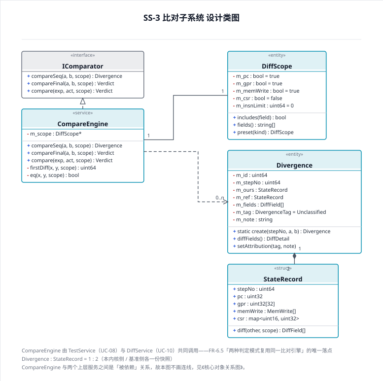
端口—适配器：外部工具链与基准的变化被关在端口后面；ProcessRunner 为两者共用。
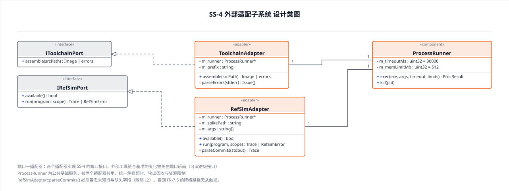
6 个服务泛化自 ServiceBase（protected 的唯一承载者）；各服务经 IStore 依赖 Persistence。
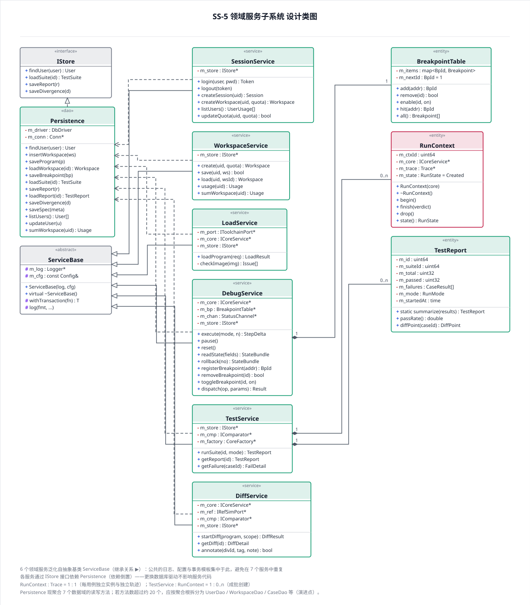
唯一对外入口：鉴权 → 限额 → 按 op 分发 → 结构化封装；全部为冻结级契约。
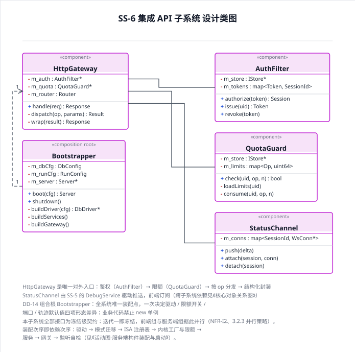
6 个视图统一经 HttpApiClient 访问服务端、经 StateStore 管理状态，视图之间不直接通信。
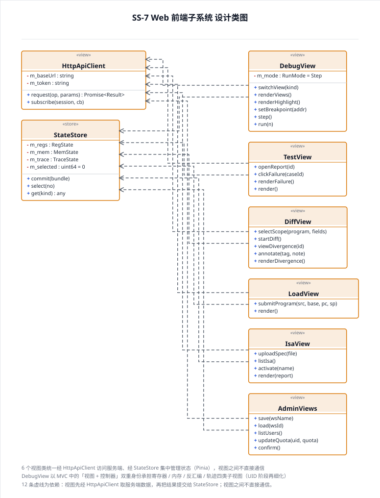
只画持久化实体与运行时实体之间的关联与数量关系；TestSuite n:m IsaMeta 需新增交叉表，其余在 n 端加外键。
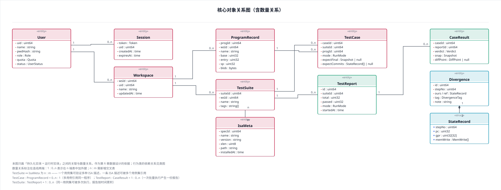
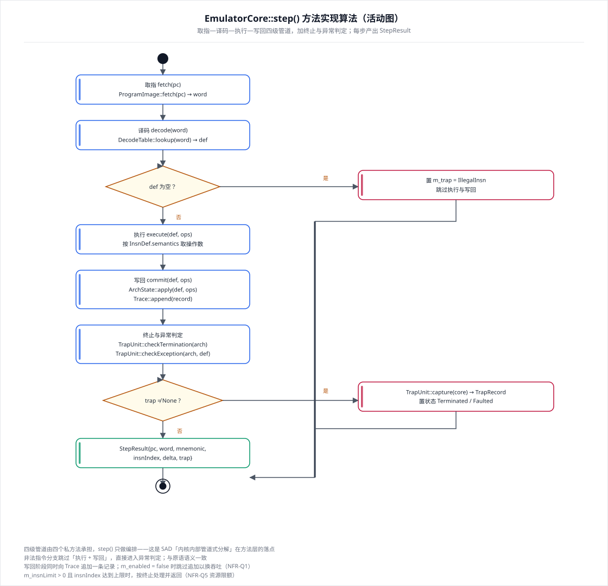
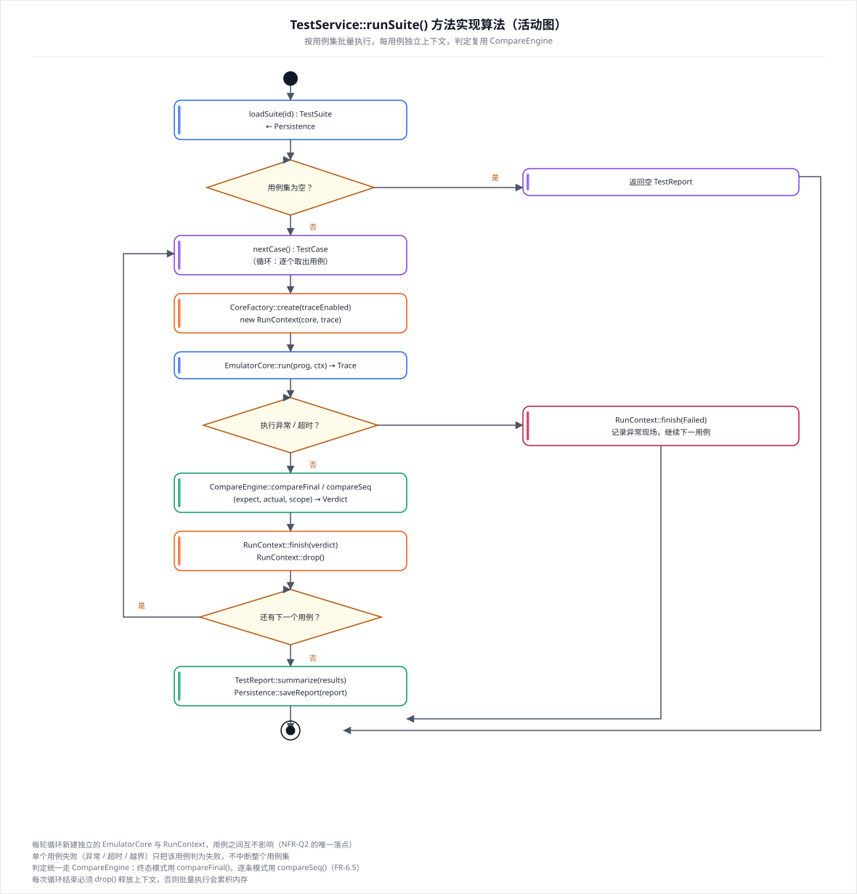
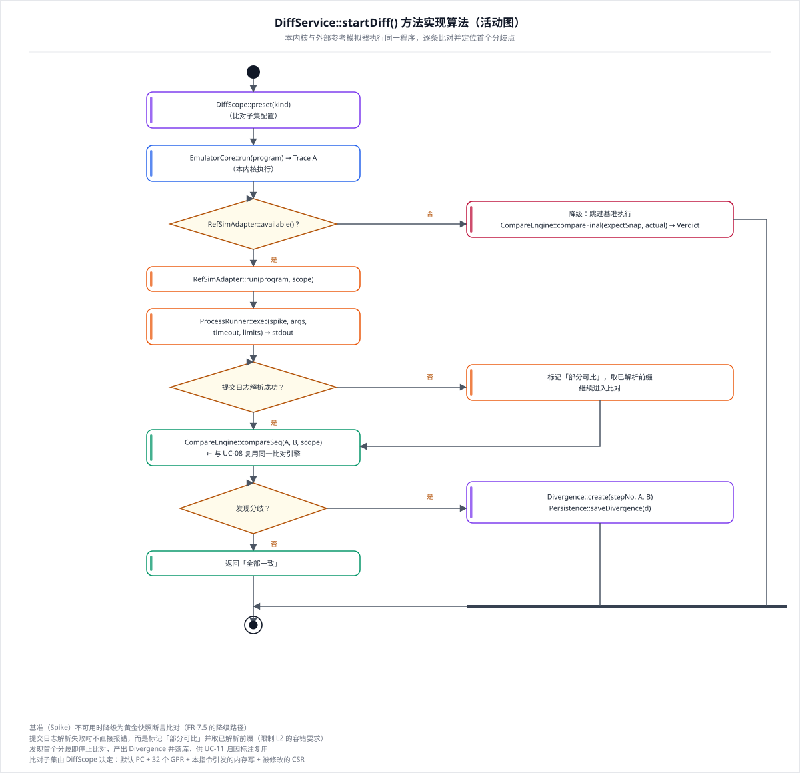
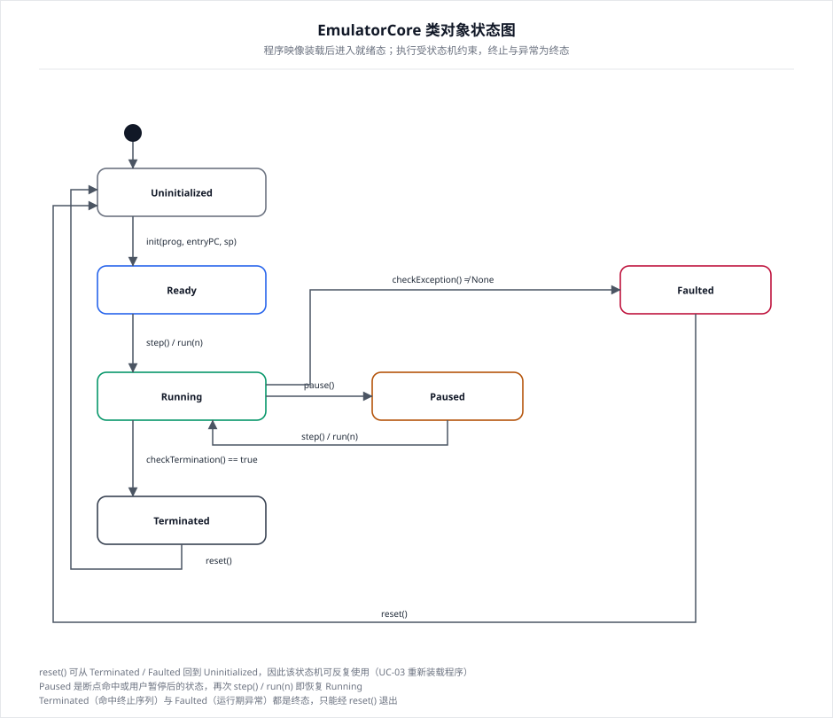
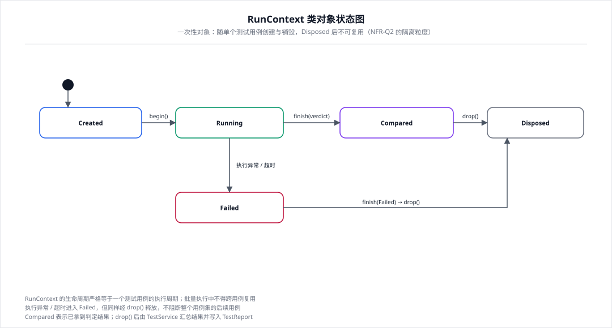
| 文件 | 内容 | 规模 |
|---|---|---|
类图-SS1-内核.svg | 模拟执行内核子系统 | 7 类 |
类图-SS2-ISA抽象.svg | ISA 抽象子系统 | 5 类 |
类图-SS3-比对.svg | 比对子系统 | 4 类 |
类图-SS4-外部适配.svg | 外部适配子系统 | 3 类 + 2 接口 |
类图-SS5-领域服务.svg | 领域服务子系统 | 11 类 |
类图-SS6-集成API.svg | 集成 API 子系统 | 4 类 |
类图-SS7-Web前端.svg | Web 前端子系统 | 8 类 |
类图-核心对象关系.svg | 实体关联与 1:1 / 1:n / n:m 数量关系 | 13 类 |
活动图-EmulatorCore-step.svg | 取指—译码—执行—写回四级管道算法 | — |
活动图-TestService-runSuite.svg | 用例集批量执行算法（含隔离与释放） | — |
活动图-DiffService-startDiff.svg | 一致性对拍算法（含降级与部分可比） | — |
状态图-EmulatorCore.svg | 内核 6 状态机 | — |
状态图-RunContext.svg | 用例上下文 5 状态生命周期 | — |
类设计说明.md | 类清单、可见性、类间关系、属性与方法精化、枚举与值类型、创建销毁、一致性说明 | 42 行为设计类 / 6 接口 / 8 实体类（阶段二口径；阶段三显式化 Breakpoint、阶段四新增 Bootstrapper 与 IDecodeTable 后为 43 / 7 / 8，最终以《软件详细设计文档》5.1 为准） |